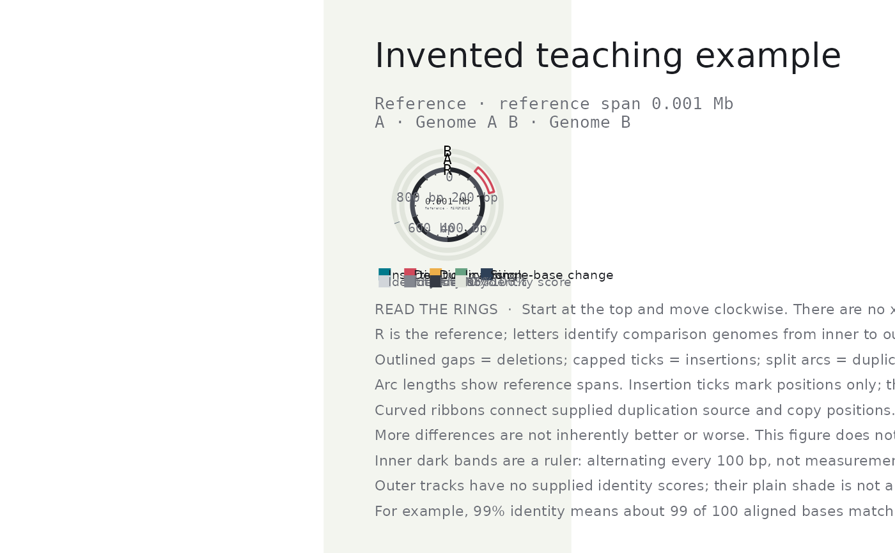

Compare genomes on concentric reference-coordinate rings
Source:R/plot_reference_comparison.R
plot_reference_comparison.RdThe inner ring is one reference sequence; each outer ring is a comparison genome. All marks use coordinates on that same reference, not coordinates on the comparison genomes. This function displays supplied variant calls; it does not align sequences or infer variants. Missing marks do not establish sequence identity or coverage. Overlapping intervals may obscure each other.
Usage
plot_reference_comparison(
variants,
genome_length,
reference = "Reference",
sample_order = NULL,
types = .reference_types,
title = NULL,
interactive = FALSE,
palette = "minou",
family = "sans",
mono_family = "mono",
identity_windows = NULL
)Arguments
- variants
Data frame with
sample,type,start,end. Types are INS (insertion), DEL (deletion), DUP (duplication), INV (inversion), and SNP (single-base change). Optionalevent_lengthgives an insertion's supplied size; optionalsource_startgives a duplication's source position. Neither is inferred from missing values. Coordinates are zero-based reference positions in base pairs, with exclusive ends. Point events may have equal endpoints.- genome_length
Length of the reference sequence in base pairs.
- reference
Name of the reference sequence.
- sample_order
Comparison genomes, from inner to outer. May include genomes with no supplied variants. One comparison gives a two-genome plot.
- types
Variant types to display. An empty vector hides all events.
- title
Optional title.
- interactive
Add hover details for
syn_girafe().- palette
An ltc palette name or vector of colours.
- family, mono_family
Font families for prose and coordinate labels. Use IBM Plex Sans and IBM Plex Mono with
save_reference_comparison().- identity_windows
Optional data frame with
sample,start,end,identity(percent, 0-100 or NA), using the same zero-based reference coordinates with exclusive ends. Windows must not overlap within a sample. Supply measured alignment identities; variant calls do not determine these. Shading uses a fixed 90-100 percent scale, with values below 90 clamped to the lightest shade. Coverage is not inferred.
Value
A ggplot, also suitable for ggplot2::ggsave().
Examples
v <- data.frame(sample = c("Genome A", "Genome B"),
type = c("DEL", "SNP"), start = c(100, 700), end = c(200, 701))
plot_reference_comparison(v, 1000, title = "Invented teaching example")
